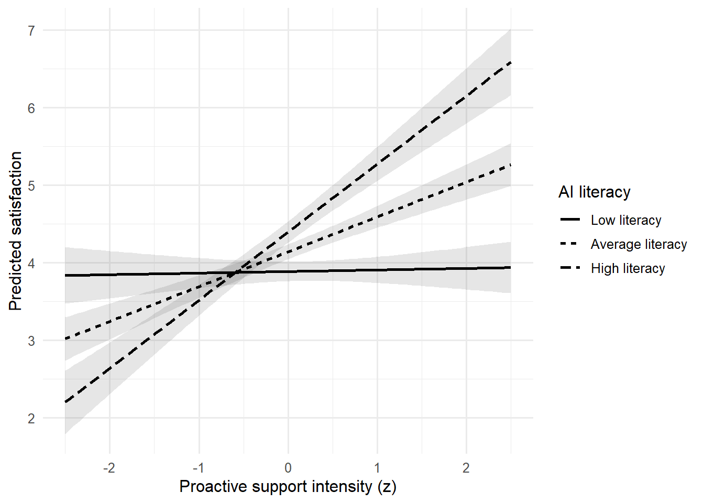
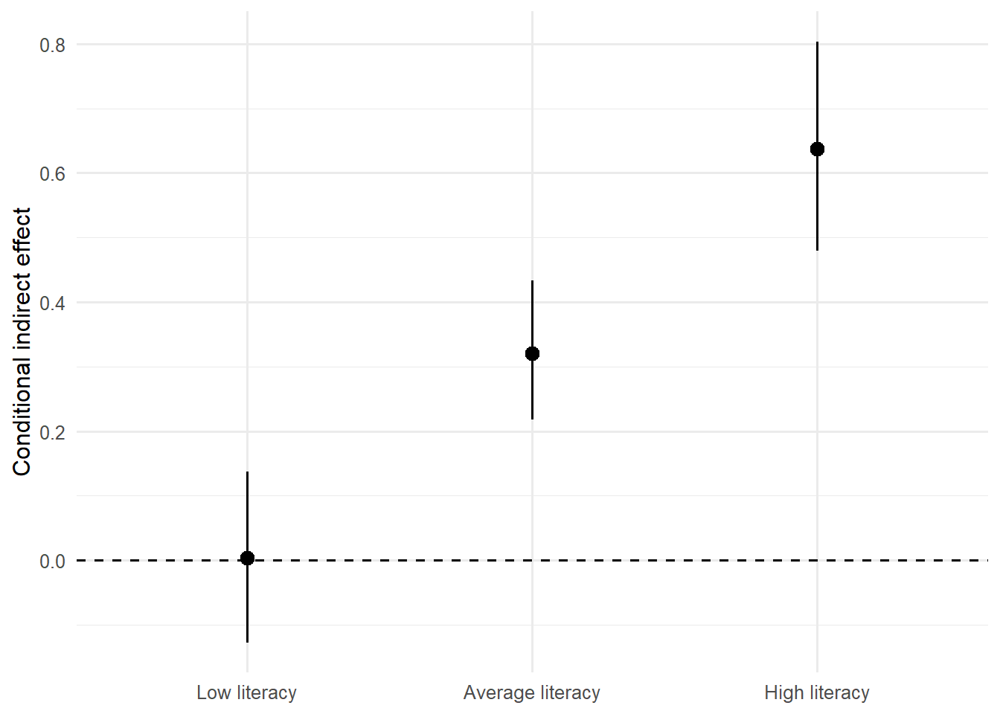

flowchart TD
A["Theory 왜·언제 효과가 생기는가?"] --> B["Temporal Order X → M → Y"]
B --> C["Identification 무작위화·confounding·selection"]
C --> D["Statistical Model direct·indirect·interaction"]
D --> E["Uncertainty bootstrap·CI"]
E --> F["Sensitivity 대안 경로·측정오류"]
F --> G["Claim 통계적·인과적 주장 구분"]
메커니즘과 조건부 효과
Mediation, Moderation, and Conditional Process Models
11주차 학습목표
Note
이번 주 학습을 마치면 다음을 할 수 있어야 합니다.
- 매개, 조절, 조절된 매개가 답하는 연구질문을 구분한다.
- mediation의 total, direct, indirect effect를 회귀식과 경로도로 연결한다.
- 간접효과의 유의성 자체와 인과적 메커니즘 주장을 구분한다.
- bootstrap confidence interval이 해결하는 문제와 해결하지 못하는 문제를 설명한다.
- moderation coefficient를 조건부 slope로 해석하고 의미 있는 moderator 값에서 탐색한다.
- 평균중심화와 표준화가 해석 기준을 바꾸지만 interaction을 만들어내지는 않음을 이해한다.
- 조절된 매개에서 conditional indirect effect와 index of moderated mediation를 구분한다.
- cross-sectional, longitudinal, experimental mediation의 증거 수준을 구분한다.
- 측정오류와 반복측정 구조가 mediation 결과에 미치는 영향을 점검한다.
- GenAI를 경로 생성기가 아니라 causal-assumption auditor로 활용한다.
오늘의 핵심 질문
통계적 경로가 관측되었다는 사실만으로 “왜”와 “언제”를 인과적으로 설명할 수 있는가?
1. 세 가지 질문
| 분석 | 질문 | 핵심 수량 |
|---|---|---|
| Mediation | X의 효과가 어떤 중간과정을 통해 나타나는가? | indirect effect |
| Moderation | X와 Y의 관계가 언제·누구에게·어떤 조건에서 달라지는가? | interaction, conditional effect |
| Conditional process | 간접효과 자체가 조건에 따라 달라지는가? | conditional indirect effect, index |
Important
“Mediation = why”는 이론적 질문을 요약한 표현입니다. 통계적 mediation만으로 causal mechanism이 자동으로 입증되는 것은 아닙니다.
같은 사례로 세 질문 연결하기
AI의 설명을 본 사람들이 시스템을 더 신뢰한다고 합시다. 여기서 왜, 누구에게, 그 과정이 누구에게 더 강한지는 서로 다른 질문입니다.
- 매개: 설명 제공이 지각된 투명성을 높이고, 높아진 투명성이 신뢰와 연결되는가?
- 조절: 설명 제공과 신뢰의 관계가 사전 AI 이해도에 따라 달라지는가?
- 조절된 매개: 설명이 투명성을 거쳐 신뢰로 이어지는 간접경로 자체가 AI 이해도에 따라 달라지는가?
Mediator(매개변수)는 중간 과정으로 가정한 변수입니다. 단순히 결과와 상관이 높은 변수가 아니라, 이론적으로 X 이후에 변화하고 Y보다 앞서 작용해야 합니다. Moderator(조절변수)는 관계의 크기나 방향이 달라지는 조건입니다. W가 높을수록 Y도 높다는 것만으로 조절이 성립하지는 않습니다. X와 Y를 연결하는 기울기가 달라져야 합니다.
같은 변수도 연구질문에 따라 역할이 달라집니다. “AI 교육 → AI 이해도 → 활용성과”에서는 이해도가 매개변수일 수 있습니다. “설명 제공 → 신뢰의 관계가 사전 이해도에 따라 달라진다”에서는 조절변수입니다. 변수 이름이 역할을 정하는 것이 아닙니다.
이해 확인
“투명성과 신뢰가 매우 높은 상관을 보이므로 투명성을 매개변수로 정했다”는 설명에서 빠진 것은 무엇일까요?
생각해 본 뒤 답 확인
X가 투명성을 변화시킨다는 이론, 투명성이 신뢰에 선행한다는 시간 순서, 두 변수의 공통 원인과 문항 중복에 대한 검토가 빠져 있습니다. 상관은 과정 가설을 뒷받침하는 일부 정보일 뿐 역할의 충분한 근거가 아닙니다.
2. GenAI 활용 원칙
이번 주의 순서는 다음과 같습니다.
Theorize → Draw → Identify → Estimate → Stress-test → State limits
경로를 만들어 달라고 하지 말고 가정을 공격하게 하기
다음 mediation 가설을 검토하라.
X: AI 설명 제공 여부, 무작위 배정
M: 설명 직후 측정한 perceived transparency
Y: 같은 세션 마지막에 측정한 trust
가설: 설명 제공이 transparency를 높이고, transparency가 trust를 높인다.
다음을 causal-assumption reviewer처럼 질문하라.
1. X→M, M→Y, X→Y 경로 각각에서 필요한 식별 가정은 무엇인가?
2. M과 Y 사이의 가능한 미측정 confounder를 제안하라.
3. 처치 이후 confounder 또는 collider를 통제할 위험이 있는가?
4. 시간 순서와 측정오류를 어떻게 개선할 수 있는가?
5. 통계적 indirect effect와 causal mediation claim을 구분한 보고문장을 제안하라.
완성된 경로를 임의로 추가하지 말고, 필요한 이론적 근거를 질문하라.GenAI 사용 금지 패턴
- 상관이 높은 변수를 자동으로 mediator로 지정하기
- 유의한 경로만 남겨 이론을 사후적으로 구성하기
- cross-sectional 설문에서 causal chain을 확정하기
- bootstrap CI가 0을 포함하지 않는다는 이유만으로 메커니즘을 “입증”했다고 쓰기
- modification index 또는 PROCESS model 번호를 이론 대신 사용하기
3. 준비
한 번만 설치
install.packages(c(
"tidyverse", "broom", "emmeans",
"lavaan", "interactions"
))기본 패키지
library(tidyverse)
library(broom)
library(emmeans)
library(lavaan)
theme_set(theme_minimal(base_size = 12))이번 예제는 무엇을 보여주는 자료인가
아래 세 자료는 실제 참가자의 연구결과가 아니라 학습을 위해 생성한 모의자료입니다. 자료 생성식에 넣은 계수는 모집단의 참값 역할을 하고, 분석에서 얻는 계수는 한 표본의 추정값입니다. 두 값이 정확히 같지 않은 것이 정상입니다. 특히 참값이 0이 아니어도 표본의 검정은 유의하지 않을 수 있습니다.
rnorm()은 정규분포 난수, rbinom()은 이 예제에서 0/1 처치 배정, set.seed()는 난수 재현을 위한 시작점을 정합니다. 시드의 숫자는 연구 날짜를 의미하지 않습니다. mutate()는 새 변수를 만들고, |>는 앞의 결과를 다음 함수로 전달합니다.
실행과 재현
Bootstrap 5,000회 적합은 시간이 걸릴 수 있습니다. 강의 전 전체 문서를 렌더링해 두고, 마지막의 sessionInfo()로 패키지 버전을 기록합니다. 반복 수를 줄인 빠른 시연과 최종 추론용 분석을 구분합니다. 두 bootstrap 적합에는 별도 시드를 두어 중간에 다른 난수 코드를 실행해도 재현하기 쉽게 했습니다.
Part I. Mediation
4. HCI mediation 사례
AI가 답변의 근거를 설명하면 사용자는 시스템을 더 투명하다고 느끼고, 그 결과 신뢰가 높아지는지 살펴봅니다.
- X: explanation 제공 여부, 무작위 배정
- M: perceived transparency
- Y: trust
- C: 사전 신뢰도, 처치 이전 측정
set.seed(20261201)
n_mediation <- 420
mediation_data <- tibble(
participant_id = sprintf("M%03d", 1:n_mediation),
prior_trust = rnorm(n_mediation, 0, 1),
explanation_num = rbinom(n_mediation, 1, 0.50)
) |>
mutate(
explanation = factor(
explanation_num,
levels = c(0, 1),
labels = c("No explanation", "Explanation")
),
transparency =
0.65 * explanation_num +
0.30 * prior_trust +
rnorm(n_mediation, 0, 0.90),
trust =
0.60 * transparency +
0.20 * explanation_num +
0.25 * prior_trust +
rnorm(n_mediation, 0, 0.95)
)
glimpse(mediation_data)Rows: 420
Columns: 6
$ participant_id <chr> "M001", "M002", "M003", "M004", "M005", "M006", "M007"…
$ prior_trust <dbl> 0.32382152, 0.15522311, 0.67337943, -0.03181033, 0.575…
$ explanation_num <int> 1, 1, 1, 1, 1, 0, 0, 1, 0, 0, 0, 0, 1, 1, 0, 1, 0, 0, …
$ explanation <fct> Explanation, Explanation, Explanation, Explanation, Ex…
$ transparency <dbl> 0.57891577, 1.00288369, 1.63960231, 0.57428490, 1.8448…
$ trust <dbl> 1.518063799, 1.464875980, 1.480358661, 0.178615795, 0.…설계 감사
mediation_data |>
summarise(
rows = n(),
participants = n_distinct(participant_id),
explanation_rate = mean(explanation_num),
missing_m = sum(is.na(transparency)),
missing_y = sum(is.na(trust))
)# A tibble: 1 × 5
rows participants explanation_rate missing_m missing_y
<int> <int> <dbl> <int> <int>
1 420 420 0.495 0 05. 경로와 회귀식
flowchart LR
X["X Explanation"] -->|"a"| M["M Transparency"]
M -->|"b"| Y["Y Trust"]
X -->|"c′"| Y
C["C Prior trust"] --> M
C --> Y
Mediator 모형:
\[ M_i=\alpha_M+aX_i+\gamma_M C_i+\varepsilon_{Mi} \]
Outcome 모형:
\[ Y_i=\alpha_Y+c'X_i+bM_i+\gamma_Y C_i+\varepsilon_{Yi} \]
선형·가법 모형에서:
\[ \text{Indirect effect}=ab \]
\[ \text{Total effect}=c'+ab \]
Warning
\(c=c'+ab\)라는 단순 분해는 동일한 선형척도, 올바른 함수형태, 필요한 interaction 부재 등의 조건에서 가장 자연스럽습니다. Logistic outcome, nonlinear link, X–M interaction에서는 효과 분해가 더 복잡해집니다.
식의 기호를 먼저 읽기
| 기호 | 의미 | 이 사례에서의 해석 |
|---|---|---|
| \(i\) | 관측 대상의 번호 | 참가자 i |
| \(\alpha_M,\alpha_Y\) | 절편 intercept | 예측변수가 모두 0일 때의 기대점수 |
| \(a\) | X에서 M으로의 회귀계수 | 같은 사전 신뢰에서 설명 조건 간 투명성 차이 |
| \(b\) | X와 C를 고려한 M의 회귀계수 | 투명성 1단위 차이에 대응하는 신뢰 차이 |
| \(c'\) | 지정한 M을 고려한 X 계수 | M과 C가 같은 값일 때 설명 조건 간 신뢰 차이 |
| \(\gamma_M,\gamma_Y\) | 공변량 C의 계수 | 사전 신뢰와 각 결과의 조건부 관계 |
| \(\varepsilon\) | 오차항 또는 잔차에 대응하는 부분 | 식이 설명하지 못한 변동 |
여기서 “같은 값으로 둔다”는 우선 회귀식에서 조건화한다는 뜻입니다. 실제로 참가자의 투명성을 강제로 같은 값에 설정한 실험과 같다고 단정할 수 없습니다. 잔차에는 누락된 원인과 우연한 변동 등이 들어갈 수 있으므로 잔차를 전부 측정오류라고 부르지도 않습니다.
간접효과가 왜 곱인가
X가 한 단위 달라질 때 M은 a만큼 달라집니다. M 한 단위의 차이가 Y의 b만큼 차이와 연결된다면, M을 거치는 부분은 \(a\times b\)입니다. 단위로 보면 더 분명합니다.
\[ \underbrace{a}_{M\text{점}/X\text{단위}}\times \underbrace{b}_{Y\text{점}/M\text{점}} =\underbrace{ab}_{Y\text{점}/X\text{단위}} \]
예를 들어 a=0.60, b=0.70이면 간접효과는 0.42입니다. X가 0/1이면 X 한 단위는 설명 없음에서 설명 있음으로 바뀌는 대비입니다. a가 양수이고 b가 음수라면 간접효과는 음수입니다. 화살표가 있다는 사실은 긍정적인 결과를 뜻하지 않습니다.
총효과 분해를 직접 유도하기
M식을 Y식에 대입하고 X항을 묶습니다.
\[ Y_i=(\alpha_Y+b\alpha_M)+(c'+ab)X_i +(\gamma_Y+b\gamma_M)C_i+(b\varepsilon_{Mi}+\varepsilon_{Yi}) \]
X의 계수가 \(c'+ab\)가 됩니다. 같은 표본·공변량·선형척도를 사용하는 모형에서 직접 부분과 간접 부분이 합쳐지는 이유입니다. 그러나 이 대수적 분해와 각 부분의 인과적 식별은 별개입니다.
Logistic 회귀는 log-odds 척도입니다. M을 넣기 전후 X 계수의 감소를 그대로 간접효과라고 읽으면 척도 및 noncollapsibility 문제가 섞일 수 있습니다. 비선형모형에서는 우선 확률 차이 등 어떤 효과척도를 알고 싶은지 정해야 합니다.
6. 과거의 단계적 유의성 규칙을 넘어서기
과거에는 다음 경로가 모두 유의해야 mediation이라고 설명하는 경우가 많았습니다.
- X → Y total effect
- X → M
- M → Y controlling X
- M을 넣은 뒤 X → Y 감소
현대적 접근에서는 indirect effect 자체의 추정치와 불확실성을 직접 평가합니다.
Important
Total effect가 유의하지 않아도 indirect effect가 존재할 수 있습니다. 서로 반대 방향의 경로, 낮은 정밀도, heterogeneous effect가 total effect를 약화할 수 있기 때문입니다.
총효과가 0이어도 두 과정이 있을 수 있다
설명은 투명성을 높여 신뢰를 높이는 동시에 위험정보를 드러내 신뢰를 낮출 수도 있습니다. 가상 예로 \(ab=0.40\), \(c'=-0.40\)이면 총효과는 0입니다. 전체 변화가 작다는 사실이 모든 경로의 부재를 뜻하지 않습니다. 총효과 검정의 귀무가설은 \(c=0\)이고 간접효과 검정은 \(ab=0\)이므로 서로 다른 질문입니다.
직접효과가 유의하지 않으면 완전매개인가
아닙니다. p>.05는 직접효과가 정확히 0이라는 증거가 아닙니다. CI가 어떤 크기의 음·양 효과를 여전히 허용하는지 보아야 합니다. 이번 모의자료에는 직접경로의 생성계수 0.20이 들어 있으므로, 실제 출력에서 c′가 유의하지 않더라도 “직접경로가 없는 자료”가 되지는 않습니다.
“완전매개가 입증되었다”보다는 “간접효과는 양수로 추정되었고 직접효과는 현재 표본의 정밀도에서 0과 구별되지 않았다”라고 보고합니다. 실질적으로 무시할 만큼 작은 효과인지 확인하려면 사전에 정한 기준과 그에 맞는 동등성 평가 등이 필요합니다.
매개비율 \(ab/(c'+ab)\)도 분모가 작으면 불안정하고, 경로 방향이 반대이면 100%를 넘거나 음수가 될 수 있습니다. 비율 하나를 메커니즘의 확실성으로 해석하지 않습니다.
7. lavaan으로 simple mediation 적합하기
mediation_model <- '
# mediator model
transparency ~ a*explanation_num + g1*prior_trust
# outcome model
trust ~ b*transparency + cp*explanation_num + g2*prior_trust
# defined parameters
indirect := a*b
direct := cp
total := cp + (a*b)
'set.seed(110101)
mediation_fit <- sem(
mediation_model,
data = mediation_data,
se = "bootstrap",
bootstrap = 5000
)
summary(
mediation_fit,
standardized = TRUE,
rsquare = TRUE
)lavaan 0.6-19 ended normally after 1 iteration
Estimator ML
Optimization method NLMINB
Number of model parameters 7
Number of observations 420
Model Test User Model:
Test statistic 0.000
Degrees of freedom 0
Parameter Estimates:
Standard errors Bootstrap
Number of requested bootstrap draws 5000
Number of successful bootstrap draws 5000
Regressions:
Estimate Std.Err z-value P(>|z|) Std.lv Std.all
transparency ~
explntn_n (a) 0.621 0.088 7.091 0.000 0.621 0.315
prir_trst (g1) 0.322 0.044 7.388 0.000 0.322 0.325
trust ~
trnsprncy (b) 0.686 0.046 14.871 0.000 0.686 0.571
explntn_n (cp) 0.047 0.091 0.512 0.609 0.047 0.020
prir_trst (g2) 0.207 0.046 4.513 0.000 0.207 0.175
Variances:
Estimate Std.Err z-value P(>|z|) Std.lv Std.all
.transparency 0.790 0.054 14.575 0.000 0.790 0.811
.trust 0.809 0.062 13.047 0.000 0.809 0.577
R-Square:
Estimate
transparency 0.189
trust 0.423
Defined Parameters:
Estimate Std.Err z-value P(>|z|) Std.lv Std.all
indirect 0.426 0.070 6.072 0.000 0.426 0.180
direct 0.047 0.091 0.512 0.609 0.047 0.020
total 0.473 0.108 4.367 0.000 0.473 0.200간접·직접·총효과와 bootstrap CI
mediation_estimates <- parameterEstimates(
mediation_fit,
standardized = TRUE,
ci = TRUE,
boot.ci.type = "perc"
) |>
filter(
op %in% c("~", ":=")
) |>
select(
lhs, op, rhs,
est, se, ci.lower, ci.upper,
std.all, pvalue
)
mediation_estimates lhs op rhs est se ci.lower ci.upper std.all pvalue
1 transparency ~ explanation_num 0.621 0.088 0.445 0.790 0.315 0.000
2 transparency ~ prior_trust 0.322 0.044 0.233 0.406 0.325 0.000
3 trust ~ transparency 0.686 0.046 0.593 0.776 0.571 0.000
4 trust ~ explanation_num 0.047 0.091 -0.130 0.226 0.020 0.609
5 trust ~ prior_trust 0.207 0.046 0.119 0.297 0.175 0.000
6 indirect := a*b 0.426 0.070 0.292 0.568 0.180 0.000
7 direct := cp 0.047 0.091 -0.130 0.226 0.020 0.609
8 total := cp+(a*b) 0.473 0.108 0.257 0.683 0.200 0.000무엇을 보고할까?
- path a의 추정치와 CI
- path b의 추정치와 CI
- direct effect \(c'\)와 CI
- indirect effect \(ab\)와 bootstrap CI
- total effect와 CI
- outcome의 원단위와 분석표본
- 포함한 baseline covariate와 근거
- causal interpretation을 지지하는 설계와 남은 가정
코드의 기호와 결과표 읽기
~는 왼쪽 변수를 오른쪽 변수로 회귀한다는 뜻입니다. a*explanation_num의 a는 실제로 곱할 숫자가 아니라 계수의 이름표입니다. :=는 이름 붙인 계수로 새 추정량을 정의합니다. 따라서 indirect := a*b는 a와 b를 추정한 뒤 그 곱과 불확실성을 계산하라는 요청입니다.
| 출력 | 읽는 법 | 주의할 점 |
|---|---|---|
est |
원척도 점추정치 | 어떤 변수의 몇 단위 변화인지 확인 |
se |
추정치의 표준오차 | 개인별 점수의 SD와 다름 |
ci.lower, ci.upper |
신뢰구간 양 끝 | 여기서는 원척도 추정치에 대응 |
pvalue |
해당 검정의 p값 | 출력 0.000은 정확히 0이 아님 |
std.all |
관측변수까지 표준화한 계수 | 이진 X의 1 SD는 0→1 처치 대비와 다름 |
R-Square |
모형이 설명한 변동의 비율 | 인과적으로 설명한 비율은 아님 |
# 현재 실행에서 얻은 값으로 계산 확인
med_paths <- parameterEstimates(mediation_fit)
a_hat <- med_paths$est[med_paths$label == "a"]
b_hat <- med_paths$est[med_paths$label == "b"]
cp_hat <- med_paths$est[med_paths$label == "cp"]
tibble(
quantity = c("a", "b", "direct", "indirect = a*b", "total"),
estimate = c(a_hat, b_hat, cp_hat, a_hat*b_hat, cp_hat+a_hat*b_hat)
)# A tibble: 5 × 2
quantity estimate
<chr> <dbl>
1 a 0.621
2 b 0.686
3 direct 0.0468
4 indirect = a*b 0.426
5 total 0.473 이 실행에서 간접효과는 0.621 × 0.686 ≈ 0.426입니다. 개별 CI의 하한끼리 곱하거나 두 CI를 더해서 간접·총효과 CI를 만들면 안 됩니다. 추정량 사이의 공동 변동을 반영해야 합니다.
적합도가 완벽해도 이론이 입증된 것은 아니다
이 단순 매개모형처럼 자유도 df=0인 just-identified 모형은 자료의 해당 공분산 구조를 재현할 만큼 파라미터가 충분합니다. 검정통계량이 0이라는 사실을 “우리 이론이 완벽하다”라고 해석하지 않습니다. R²가 높거나 적합도가 좋다는 사실만으로 화살표의 방향과 인과적 메커니즘은 확인되지 않습니다.
parameterEstimates(..., standardized=TRUE)는 표준화 계수를 추가하지만 같은 행의 SE와 CI가 자동으로 그 표준화 계수에 대한 값이 되는 것은 아닙니다. 표준화 추론이 필요하면 목표 수량과 계산법을 따로 확인합니다. lavaan 결과 추출 문서
8. Bootstrap이 하는 일과 하지 않는 일
Bootstrap이 하는 일
- 원표본에서 복원추출하여 통계량의 표집분포를 근사한다.
- \(ab\)처럼 비대칭일 수 있는 통계량의 CI를 구성한다.
- 정규근사에만 의존하지 않는 불확실성 추정을 제공한다.
Bootstrap이 하지 않는 일
- X–M 또는 M–Y confounding 제거
- 잘못된 시간 순서 수정
- 측정오류 제거
- 잘못된 함수형태 교정
- 선택 편향·결측 편향 제거
- 극단적으로 작은 표본에서 정보를 새로 생성
- 반복측정 행을 독립적인 참여자로 바꾸기
Warning
Bootstrap은 원자료가 대표하는 경험적 분포를 재표집합니다. 원자료 자체가 편향되었거나 분석단위를 잘못 정했다면 그 문제도 함께 재표집합니다.
재표집 단위
- 집단 간 연구: 참여자 단위
- 반복측정 연구: 참여자의 모든 행을 하나의 cluster로 재표집
- 팀·학교·가족 자료: 상위 cluster 단위 고려
- 시계열: 단순 행 bootstrap보다 block 또는 time-aware 방법 고려
420명으로 5000개의 반복표본을 만드는 과정
- 원자료 420명에서 복원추출로 420번 뽑습니다. 같은 사람이 여러 번 들어오거나 아예 빠질 수 있습니다.
- 그 표본에서 두 회귀식을 다시 적합하여 a와 b를 얻습니다.
- 그 반복의 \(ab\)를 저장합니다.
- 위 과정을 5,000번 반복합니다.
- 저장한 간접효과의 2.5백분위수와 97.5백분위수를 구하면 percentile 95% CI가 됩니다.
Sampling distribution(표집분포)은 같은 연구를 반복했을 때 추정량이 어떻게 달라지는지에 관한 분포입니다. a와 b가 각각 대칭적인 분포에 가까워도 곱 ab는 비대칭일 수 있습니다. Bootstrap은 대칭적인 정규근사에만 의존하지 않고 이 모양을 근사하는 데 도움이 됩니다.
정밀도와 편향은 다르다
Precision(정밀도)은 추정치의 흔들림이 얼마나 작은지, bias(편향)는 추정 절차가 평균적으로 목표에서 얼마나 벗어나는지에 관한 말입니다. 편향된 표본을 더 많이 재표집하면 잘못된 답을 더 정밀하게 얻을 수도 있습니다. 재표집 5,000회는 참여자 5,000명을 추가한 것이 아닙니다.
95% 신뢰수준은 같은 절차를 반복할 때 만들어지는 구간들의 참값 포함률에 관한 성질입니다. 이미 계산된 구간에 고정된 참값이 들어갈 확률이 95%라는 빈도주의 해석은 하지 않습니다. 또한 작은 표본이나 불안정한 모형에서는 bootstrap도 원하는 포함률을 보장하지 않습니다.
p값과 bootstrap CI가 다르게 보일 때
lavaan 출력의 z 및 p는 bootstrap SE를 사용한 정규근사 검정일 수 있습니다. Percentile CI와 동일한 검정 절차가 아니므로 간접효과는 사용한 CI 방법, 반복 수, 성공한 반복 수와 함께 해석합니다. 반복 수를 늘리면 CI 끝점의 Monte Carlo 변동을 줄일 수 있지만 연구설계의 편향을 없애지는 못합니다.
9. Mediation의 인과적 가정
통계적 indirect effect를 causal mediation effect로 읽으려면 강한 가정이 필요합니다.
핵심 질문
- X가 무작위화되었는가?
- X 이전의 M–Y confounder를 충분히 고려했는가?
- X의 영향을 받은 변수가 다시 M과 Y를 confound하지 않는가?
- M을 특정 값으로 바꾸는 개입을 일관되게 정의할 수 있는가?
- 모든 relevant covariate 조합에서 처치와 mediator 값이 관측될 가능성이 있는가?
- 측정시점이 X → M → Y의 순서를 지지하는가?
- 결측과 이탈이 경로와 관련되어 있지 않은가?
통계적 문장과 인과적 문장
통계적 문장
Explanation condition was associated with higher transparency, and the estimated indirect association through transparency was positive.
더 강한 인과적 문장
Providing an explanation increased trust by increasing perceived transparency.
두 번째 문장은 설계와 식별 가정에 대해 더 많은 근거가 필요합니다.
Identification과 estimation을 구분하기
Identification(식별)은 관측자료와 가정으로 원하는 인과적 수량을 알아낼 수 있는가라는 문제입니다. Estimation(추정)은 그것을 현재 유한표본에서 계산하는 문제입니다. 표본이 커지고 SE가 작아져도 식별에 필요한 가정과 정보가 생기는 것은 아닙니다.
X를 무작위화했는데 왜 M과 Y는 여전히 문제인가
설명을 무작위 배정하면 X와 사전 특성 사이의 체계적 연결을 끊는 데 도움이 됩니다. 그러나 투명성 M은 참가자가 경험하고 응답한 값입니다. 동일한 설명 조건에서도 시스템 친숙도가 높은 사람은 투명성과 신뢰를 모두 높게 평가할 수 있습니다. 이때 친숙도라는 공통 원인(confounder)이 M–Y 관계에 섞입니다.
flowchart TD U["사전 시스템 친숙도 U"] --> M["투명성 M"] U --> Y["신뢰 Y"] X["무작위 설명 X"] --> M M --> Y X --> Y
Sequential ignorability는 처치와 매개에 대한 비교 가능성을 요구하는 강한 가정 묶음입니다. X의 무작위화가 M–Y의 미측정 교란 부재까지 보장하지는 않습니다. 정확한 조건은 어떤 인과효과를 추정하는지에 따라 확인해야 합니다.
많이 통제할수록 좋은 것은 아니다
- Post-treatment confounder: 설명 X가 인지부하 L을 바꾸고 L이 M과 Y 모두에 영향을 주는 상황입니다. L을 무시해도 문제지만 단순 통제하면 X가 만든 경로를 차단하거나 목표 효과가 바뀔 수 있습니다.
- Collider(충돌변수): M과 Y 모두가 사후 설문 완료 S에 영향을 준다고 합시다. 완료자 S=1만 선택하면 선택 과정이 비인과적인 연관을 만들 수 있습니다. 공통 원인과 공통 결과는 다르게 다뤄야 합니다.
- Covariate(공변량): 식에 함께 넣은 변수라는 기술적 이름입니다. 실제로 적절한 통제변수인지는 시간 순서와 원인 구조로 판단합니다.
Positivity와 consistency
Positivity/overlap은 비교하려는 조건에서 필요한 처치와 매개 수준을 관측할 가능성이 있어야 한다는 뜻입니다. 자료가 지지하지 않는 투명성 수준으로 멀리 외삽하면 인과적 비교를 자료만으로 뒷받침하기 어렵습니다.
Consistency(일관성)는 정의한 개입과 실제 처치가 잠재결과에 일관되게 연결되어야 한다는 조건입니다. “투명성을 높인다”는 조작이 설명량 증가인지 오류 공개인지에 따라 신뢰에 다른 영향을 준다면, M을 바꾸는 개입의 의미부터 명확히 해야 합니다.
심화 읽기 자연직접효과와 자연간접효과
M(1), M(0)은 각각 설명을 받았을 때와 받지 않았을 때의 투명성입니다. Y(x,m)은 설명 상태 x와 매개 수준 m 아래의 신뢰라는 potential outcome(잠재결과)입니다. 다음 정의 쌍에서는 TE=NDE+NIE입니다.
\[ \begin{aligned} TE &= E[Y(1,M(1))-Y(0,M(0))],\\ NDE &= E[Y(1,M(0))-Y(0,M(0))],\\ NIE &= E[Y(1,M(1))-Y(1,M(0))]. \end{aligned} \]
NDE는 M을 무처치 자연값에 두고 X를 바꾸는 부분이고, NIE는 X를 1에 둔 상태에서 M의 자연값을 바꾸는 부분입니다. Y(1,M(0))처럼 서로 다른 처치 세계를 결합한 양은 직접 관측할 수 없어 추가 식별 가정이 필요합니다. 선형·가법 및 적절한 식별 조건에서 c′와 ab가 이 분해에 대응하지만, 곱을 계산했다는 사실이 가정을 입증하지는 않습니다.
Controlled direct effect는 모든 사람의 M을 정해진 m으로 고정한 대비이므로 사람별 자연값을 쓰는 NDE와 다릅니다. Sensitivity analysis(민감도 분석)는 미측정 교란 같은 특정 가정 위반이 얼마나 강해야 결론이 바뀌는지 평가합니다. 가정을 검증했다는 뜻은 아닙니다. Imai et al., 2010
10. Cross-sectional mediation의 한계
X, M, Y를 한 시점의 설문으로 측정하면 다음 대안이 열려 있습니다.
- Y가 M에 영향을 주는 역방향 경로
- 공통방법편향
- 안정적인 개인차가 M과 Y 모두를 설명
- 같은 문항 내용이 두 척도에 중복
- 사후적 이론 구성
더 강한 설계
| 설계 | 개선점 | 남는 한계 |
|---|---|---|
| X 무작위화, M·Y 순차측정 | X 경로 강화 | M–Y confounding |
| Longitudinal mediation | 시간순서 정보 | time-varying confounding |
| Mediator manipulation | mechanism 직접 개입 | 조작 타당성 |
| Sequential randomization | 여러 경로 식별 강화 | 복잡한 설계·일반화 |
| Within-person intensive data | 개인 내 과정 분석 | 시계열·측정 반응성 |
시간을 나누어 측정하면 충분할까
X를 먼저 제시하고 M을 나중에, Y를 더 나중에 측정하면 시간 순서를 뒷받침합니다. 그러나 안정적인 개인차나 시간가변 교란까지 사라지지는 않습니다. 측정 간격도 이론에 맞아야 합니다. 몇 초 만에 일어나는 과정을 한 달 간격으로 측정하거나, 며칠 걸리는 변화를 같은 세션에서 재면 예상한 과정을 놓칠 수 있습니다.
M을 조작하는 연구도 그 조작이 M 외의 경로를 함께 바꾸는지 확인해야 합니다. “더 강한 설계”는 모든 한계가 사라진 설계라는 뜻이 아니라 어떤 가정을 더 설득력 있게 뒷받침하는지를 뜻합니다.
Part II. Moderation
11. HCI moderation 사례
프로액티브 AI 지원 강도(X)가 만족도(Y)에 미치는 관계가 AI literacy(W)에 따라 달라지는지 살펴봅니다.
set.seed(20261202)
n_moderation <- 360
moderation_data <- tibble(
participant_id = sprintf("W%03d", 1:n_moderation),
support_z = rnorm(n_moderation),
ai_literacy_z = rnorm(n_moderation)
) |>
mutate(
satisfaction =
4.2 +
0.35 * support_z +
0.25 * ai_literacy_z +
0.45 * support_z * ai_literacy_z +
rnorm(n_moderation, 0, 0.90)
)
glimpse(moderation_data)Rows: 360
Columns: 4
$ participant_id <chr> "W001", "W002", "W003", "W004", "W005", "W006", "W007",…
$ support_z <dbl> 0.325842426, 0.706984008, 0.250833187, 0.185472660, 0.3…
$ ai_literacy_z <dbl> -0.42795525, 1.25363704, 0.37485012, -0.52534015, -0.56…
$ satisfaction <dbl> 4.227123, 5.636111, 5.518629, 4.308516, 5.092002, 1.743…12. Interaction model
\[ Y=b_0+b_1X+b_2W+b_3XW+e \]
X의 조건부 효과는:
\[ \frac{\partial E(Y)}{\partial X}=b_1+b_3W \]
moderation_model <- lm(
satisfaction ~ support_z * ai_literacy_z,
data = moderation_data
)
broom::tidy(
moderation_model,
conf.int = TRUE
)# A tibble: 4 × 7
term estimate std.error statistic p.value conf.low conf.high
<chr> <dbl> <dbl> <dbl> <dbl> <dbl> <dbl>
1 (Intercept) 4.14 0.0490 84.6 8.19e-238 4.04 4.24
2 support_z 0.449 0.0528 8.51 4.90e- 16 0.345 0.553
3 ai_literacy_z 0.254 0.0460 5.53 6.35e- 8 0.164 0.345
4 support_z:ai_litera… 0.429 0.0512 8.38 1.21e- 15 0.328 0.530계수 해석
- \(b_1\): AI literacy가 0일 때 support intensity의 slope (생성분포 평균 기준)
- \(b_2\): support intensity가 0일 때 AI literacy의 slope (생성분포 평균 기준)
- \(b_3\): AI literacy가 1단위 높아질 때 support slope가 얼마나 변하는가
Warning
Interaction이 유의하면 주효과가 “무의미”해지는 것이 아닙니다. 주효과는 기준점에서의 조건부 효과로 해석합니다.
미분이 낯설다면 항을 묶어 보기
W를 특정 값 w에 고정하고 X항을 묶으면 다음과 같습니다.
\[ E(Y\mid X,W=w)=(b_0+b_2w)+(b_1+b_3w)X. \]
첫 괄호는 그 W 수준의 절편, 두 번째 괄호는 기울기입니다. 따라서 b₃는 “W가 1단위 높아질 때 X 기울기가 얼마나 변하는가”를 나타냅니다. W의 계수 b₂가 유의한 것과 XW의 계수 b₃가 유의한 것은 서로 다른 이야기입니다.
mod_coef <- coef(moderation_model)
tibble(
W = c(-1, 0, 1),
conditional_slope = unname(mod_coef["support_z"]) +
unname(mod_coef["support_z:ai_literacy_z"]) * W
)# A tibble: 3 × 2
W conditional_slope
<dbl> <dbl>
1 -1 0.0203
2 0 0.449
3 1 0.878 W가 0/1 집단이면 두 집단의 기울기는 b₁과 b₁+b₃이므로 차이는 b₃입니다. 집단 A에서는 유의하고 B에서는 유의하지 않다는 사실만으로 이 차이가 유의하다고 할 수 없습니다. 표본크기와 SE가 달라도 개별 p값이 달라집니다.
수학적으로 XW=WX이므로 W의 기울기도 b₂+b₃X로 쓸 수 있습니다. 하지만 어떤 변수를 초점 예측변수로, 어떤 변수를 조절변수로 해석할지는 이론과 연구설계가 정합니다. 관찰자료의 interaction만으로 W를 조작했을 때의 인과효과를 알 수 있는 것은 아닙니다.
13. Simple slopes
의미 있는 moderator 값에서 X의 slope를 추정합니다.
simple_slopes <- emtrends(
moderation_model,
~ ai_literacy_z,
var = "support_z",
at = list(
ai_literacy_z = c(-1, 0, 1)
)
)
simple_slopes ai_literacy_z support_z.trend SE df lower.CL upper.CL
-1 0.0203 0.0662 356 -0.110 0.150
0 0.4493 0.0528 356 0.345 0.553
1 0.8783 0.0802 356 0.721 1.036
Confidence level used: 0.95 ai_literacy_z = -1: 생성분포 평균보다 1 SD 낮은 수준ai_literacy_z = 0: 생성분포 평균 수준ai_literacy_z = 1: 생성분포 평균보다 1 SD 높은 수준
Note
±1 SD는 편리한 관례일 뿐입니다. 실제 척도의 임상적·정책적 기준, 분위수, 관측범위를 기준으로 probe하는 것이 더 의미 있을 수 있습니다.
Conditional predictions
moderation_grid <- crossing(
support_z = seq(-2.5, 2.5, length.out = 100),
ai_literacy_z = c(-1, 0, 1)
) |>
mutate(
literacy_level = factor(
ai_literacy_z,
levels = c(-1, 0, 1),
labels = c("Low literacy", "Average literacy", "High literacy")
)
)
moderation_pred <- predict(
moderation_model,
newdata = moderation_grid,
se.fit = TRUE
)
moderation_grid <- moderation_grid |>
mutate(
fit = moderation_pred$fit,
lower = fit - qt(0.975, df.residual(moderation_model)) *
moderation_pred$se.fit,
upper = fit + qt(0.975, df.residual(moderation_model)) *
moderation_pred$se.fit
)ggplot(
moderation_grid,
aes(
x = support_z,
y = fit,
linetype = literacy_level
)
) +
geom_ribbon(
aes(ymin = lower, ymax = upper, group = literacy_level),
alpha = 0.12,
linetype = 0
) +
geom_line(linewidth = 0.9) +
labs(
x = "Proactive support intensity (z)",
y = "Predicted satisfaction",
linetype = "AI literacy"
)
Johnson–Neyman interval
interactions::johnson_neyman(
moderation_model,
pred = support_z,
modx = ai_literacy_z
)
Warning
Johnson–Neyman 경계도 표본과 모형에 의존하는 추정치입니다. 관측범위 밖의 moderator 값이나 매우 적은 자료가 있는 구간을 해석하지 않습니다.
Simple slope는 하위집단을 따로 회귀한 결과가 아니다
여기서는 전체 자료로 적합한 한 모형을 W=−1, 0, 1에서 평가합니다. 연속형 W를 낮음·중간·높음으로 잘라 별도 회귀하는 것과 다릅니다. emtrends()의 var는 기울기를 구할 변수, at은 평가할 조절변수 값입니다.
조건부 기울기의 분산에는 두 계수 추정량의 공분산이 포함됩니다.
\[ \operatorname{Var}(\hat b_1+w\hat b_3)= \operatorname{Var}(\hat b_1)+w^2\operatorname{Var}(\hat b_3) +2w\operatorname{Cov}(\hat b_1,\hat b_3). \]
따라서 개별 계수의 CI를 단순히 더해 slope CI를 만들지 않습니다. 두 slope를 비교하고 싶으면 차이 자체를 평가합니다.
# emtrends의 at 순서는 -1, 0, 1입니다.
contrast(simple_slopes,
method = list("W=1 minus W=-1" = c(-1, 0, 1))) contrast estimate SE df t.ratio p.value
W=1 minus W=-1 0.858 0.102 356 8.383 <.0001그림의 리본과 Johnson Neyman 경계 읽기
위 그림의 리본은 조건부 평균 만족도의 신뢰구간입니다. 새 참가자 한 명의 점수가 들어갈 예측구간이 아닙니다. 예측구간은 개인별 잔차 변동까지 포함하므로 보통 더 넓습니다.
Johnson–Neyman은 미리 정한 세 수준에서 기울기를 묻는 대신, 어떤 W 범위에서 기울기 CI가 0을 제외하는지를 찾습니다. 이 경계는 효과가 갑자기 켜지는 자연적 임계점이 아닙니다. W=0.20에서는 비유의, 0.21에서는 유의하더라도 두 집단이 질적으로 다르다는 뜻은 아닙니다.
범위 전체를 탐색할 때는 다중 비교 문제와 자료밀도를 함께 살핍니다. interactions의 control.fdr=TRUE는 FDR 조정을 선택하는 옵션입니다. FDR은 기각한 가설 중 거짓 기각의 비율을 평균적으로 관리하려는 개념이며, 사용한 조정 여부를 보고합니다. 공식 설명
14. Centering에 관한 오해
평균중심화:
\[ X_c=X-\bar X \]
Centering이 하는 일
- intercept의 기준점을 평균으로 옮김
- interaction 모형의 lower-order term을 평균적인 상대 변수 수준에서 해석하게 함
- 수치적 크기를 다루기 쉽게 할 수 있음
Centering이 하지 않는 일
- interaction을 새로 만들거나 제거
- confounding 제거
- measurement error 제거
- 전체적인 predictor 상관구조 해결
- causal interpretation 제공
중심화는 원점 이동이고 표준화는 단위 변경까지 포함한다
\[ X_c=X-\bar X,\qquad X_z=\frac{X-\bar X}{s_X}. \]
평균이 50이고 SD가 10이면 원점수 60은 중심화 점수 10, z점수 1입니다. 중심화의 한 단위는 원척도 한 점이지만 z점수 한 단위는 SD 한 개입니다.
절편과 모든 하위항을 포함한 같은 선형 상호작용 모형을 다시 표현하면, 중심화 전후 예측값·잔차·R²와 interaction 검정은 같습니다. 절편과 b₁·b₂가 읽히는 기준점이 달라질 뿐입니다. 가령 1–7 척도의 W 평균이 4라면 W=0보다 Wc=0, 즉 원점수 4에서 X 기울기를 설명하는 편이 의미 있습니다.
곱항과 원변수의 상관을 줄일 수 있지만 항상 그런 것은 아니며, X와 W 자체가 매우 비슷하다는 정보 중복까지 제거하지는 않습니다.
이 예제의 밑줄 z를 정확히 이해하기
rnorm(n)은 평균 0, SD 1인 생성분포에서 난수를 뽑습니다. 실현된 표본의 평균과 SD가 정확히 0과 1이라는 뜻은 아닙니다. 아래에서 확인할 수 있습니다.
moderation_data |>
summarise(mean_W = mean(ai_literacy_z), sd_W = sd(ai_literacy_z))# A tibble: 1 × 2
mean_W sd_W
<dbl> <dbl>
1 -0.0976 1.06이 강의는 기존 생성척도를 유지하므로 −1, 0, 1을 생성분포 기준으로 읽습니다. 실제 자료에서 표본 z점수가 필요하면 as.numeric(scale(W))를 사용하고 곱항을 다시 만듭니다. 표준화를 바꾸면 계수와 probe 지점도 새 기준에 맞춰 다시 해석해야 합니다.
Part III. Moderated Mediation
15. 조건부 간접효과
AI 설명 제공(X)이 transparency(M)를 거쳐 trust(Y)에 미치는 간접효과가 AI literacy(W)에 따라 달라진다고 가정합니다.
flowchart LR
X["X Explanation"] -->|"a₁ + a₃W"| M["M Transparency"]
M -->|"b"| Y["Y Trust"]
X -->|"c′"| Y
W["W AI literacy"] -. "moderates X→M" .-> M
Mediator 모형:
\[ M=a_0+a_1X+a_2W+a_3XW+e_M \]
Outcome 모형:
\[ Y=b_0+bM+c'X+b_WW+e_Y \]
조건부 간접효과:
\[ IE(W)=(a_1+a_3W)b \]
Index of moderated mediation:
\[ Index=a_3b \]
간접효과 자체를 하나의 함수로 보기
\[ IE(w)=a_1b+(a_3b)w. \]
이 식은 W에 대한 직선입니다. 절편 a₁b는 W=0에서의 간접효과, 기울기 a₃b는 W가 한 단위 증가할 때 간접효과의 변화량입니다. 그래서 a₃b를 index of moderated mediation라고 부릅니다.
\[ IE(w_2)-IE(w_1)=(w_2-w_1)\times Index. \]
−1에서 +1까지는 두 단위이므로 차이는 index의 2배입니다. IE(1)의 CI는 그 수준의 간접효과가 0인지, index의 CI는 간접효과가 W에 따라 달라지는지를 묻습니다. 수준 검정과 차이 검정은 다릅니다.
어느 경로가 조절되는지에 따라 식이 달라진다
| 가설 | 조건부 간접효과 | 과정에 관한 질문 |
|---|---|---|
| 첫 단계 조절 | \((a_1+a_3w)b\) | 설명을 투명성으로 받아들이는 정도가 다른가 |
| 두 번째 단계 조절 | \(a(b_1+b_3w)\) | 투명성이 신뢰로 이어지는 정도가 다른가 |
| 두 단계 모두 조절 | \((a_1+a_3w)(b_1+b_3w)\) | 두 연결 모두 달라지는가 |
두 단계 모두 조절되면 w²항이 생길 수 있으므로 일정한 하나의 a₃b를 모든 수준의 변화량으로 쓸 수 없습니다. 직접경로만 조절되면 총효과는 변해도 간접효과는 일정할 수 있습니다. 소프트웨어의 PROCESS 모델 번호를 고르기 전에 어느 경로가 왜 달라져야 하는지 설명해야 합니다.
W가 처치 이후 측정되어 X의 영향을 받았다면 사전 특성에 따른 효과 이질성과 같은 의미로 해석하기 어렵습니다. 또한 선형모형에서 누락된 곡률을 곱항이 대신 포착하지 않는지도 점검합니다.
16. 조건부 과정 데이터
set.seed(20261203)
n_conditional <- 480
conditional_data <- tibble(
participant_id = sprintf("C%03d", 1:n_conditional),
explanation_num = rbinom(n_conditional, 1, 0.50),
ai_literacy_z = rnorm(n_conditional)
) |>
mutate(
xw = explanation_num * ai_literacy_z,
transparency =
0.55 * explanation_num +
0.20 * ai_literacy_z +
0.35 * xw +
rnorm(n_conditional, 0, 0.90),
trust =
0.65 * transparency +
0.15 * explanation_num +
0.10 * ai_literacy_z +
rnorm(n_conditional, 0, 0.95)
)17. lavaan으로 conditional indirect effects 추정하기
W는 표준정규 생성분포에서 뽑은 값이므로 -1, 0, 1을 생성분포 기준 낮음·평균·높음으로 평가합니다. 표본 자체를 scale()한 것은 아닙니다.
moderated_mediation_model <- '
# first-stage moderation
transparency ~ a1*explanation_num + a2*ai_literacy_z + a3*xw
# outcome equation
trust ~ b*transparency + cp*explanation_num + bw*ai_literacy_z
# conditional indirect effects at W = -1, 0, +1
indirect_low := (a1 - a3)*b
indirect_mean := a1*b
indirect_high := (a1 + a3)*b
# index of moderated mediation
index_mm := a3*b
diff_high_low := 2*a3*b
'set.seed(110102)
conditional_fit <- sem(
moderated_mediation_model,
data = conditional_data,
se = "bootstrap",
bootstrap = 5000
)
conditional_estimates <- parameterEstimates(
conditional_fit,
ci = TRUE,
boot.ci.type = "perc",
standardized = FALSE
) |>
filter(op %in% c("~", ":=")) |>
select(
lhs, op, rhs,
est, se, ci.lower, ci.upper,
pvalue
)
conditional_estimates lhs op rhs est se ci.lower ci.upper pvalue
1 transparency ~ explanation_num 0.528 0.080 0.373 0.685 0.000
2 transparency ~ ai_literacy_z 0.080 0.058 -0.035 0.191 0.165
3 transparency ~ xw 0.521 0.079 0.367 0.676 0.000
4 trust ~ transparency 0.607 0.045 0.518 0.698 0.000
5 trust ~ explanation_num 0.200 0.091 0.026 0.374 0.028
6 trust ~ ai_literacy_z 0.150 0.047 0.056 0.239 0.001
7 indirect_low := (a1-a3)*b 0.004 0.068 -0.127 0.137 0.952
8 indirect_mean := a1*b 0.320 0.056 0.218 0.433 0.000
9 indirect_high := (a1+a3)*b 0.637 0.084 0.480 0.803 0.000
10 index_mm := a3*b 0.316 0.052 0.216 0.420 0.000
11 diff_high_low := 2*a3*b 0.633 0.104 0.433 0.839 0.000해석 순서
- X×W interaction이 mediator 모형에서 어떤 방향인가?
- path b의 크기와 불확실성은 어떠한가?
- 낮음·평균·높음 W에서 indirect effect는 얼마인가?
index_mm의 bootstrap CI가 무엇을 말하는가?- W의 관측범위와 자료밀도 안에서만 해석했는가?
Important
한 수준의 indirect effect는 유의하고 다른 수준은 유의하지 않다는 사실만으로 두 indirect effect가 서로 다르다고 결론내리지 않습니다. 차이 자체를 나타내는 index of moderated mediation를 확인합니다.
현재 실행의 계수로 직접 확인하기
cond_paths <- parameterEstimates(conditional_fit)
a1_hat <- cond_paths$est[cond_paths$label == "a1"]
a3_hat <- cond_paths$est[cond_paths$label == "a3"]
b_cond_hat <- cond_paths$est[cond_paths$label == "b"]
tibble(
W = c(-1, 0, 1),
first_stage = a1_hat + a3_hat*W,
indirect = first_stage*b_cond_hat
)# A tibble: 3 × 3
W first_stage indirect
<dbl> <dbl> <dbl>
1 -1 0.00664 0.00403
2 0 0.528 0.320
3 1 1.05 0.637 Index는 0.521 × 0.607 ≈ 0.316입니다. 낮은 W에서 간접효과가 작게 나온다면 첫 단계가 작은지 b가 작은지 구분해서 설명합니다. 효과가 작은 이유까지 식으로 읽는 연습입니다.
고정한 두 수준의 차이를 직접 추정하기
위 모형에는 diff_high_low := 2*a3*b도 정의했습니다. 그 CI는 두 고정 수준의 간접효과 차이를 평가합니다. 개별 IE의 CI 끝점을 빼서 차이 CI를 만들면 안 됩니다.
조건부 간접효과의 std.all을 그대로 쓰지 않는 이유
X와 곱항 XW는 서로 다른 분산을 갖습니다. 개별 표준화 계수를 (a1-a3)*b 식에 그대로 조합하면 원래 W=−1에서의 대비와 단위가 맞지 않을 수 있습니다. 따라서 이 표는 원척도 est와 그 bootstrap CI를 보여주도록 구성했습니다.
표준화가 필요하면 “X의 0→1 변화가 Y의 몇 SD 차이인가”처럼 목표를 먼저 정의하고 각 bootstrap 반복에서 같은 방식으로 변환합니다. 표준화 열에서 부호가 달라졌다고 새로운 심리적 현상으로 해석하지 않습니다.
18. Conditional indirect effect 시각화
conditional_plot_data <- conditional_estimates |>
filter(
lhs %in% c(
"indirect_low",
"indirect_mean",
"indirect_high"
)
) |>
mutate(
literacy = factor(
lhs,
levels = c(
"indirect_low",
"indirect_mean",
"indirect_high"
),
labels = c(
"Low literacy",
"Average literacy",
"High literacy"
)
)
)ggplot(
conditional_plot_data,
aes(x = literacy, y = est)
) +
geom_hline(yintercept = 0, linetype = "dashed") +
geom_pointrange(
aes(ymin = ci.lower, ymax = ci.upper)
) +
labs(
x = NULL,
y = "Conditional indirect effect"
)
Part IV. 측정·설계·자료구조 감사
19. Composite score의 측정오류
관찰된 합성점수를 X, M, Y로 사용하는 회귀 기반 mediation은 각 점수가 완벽하게 측정되었다고 암묵적으로 다루기 쉽습니다.
측정오류는 다음을 일으킬 수 있습니다.
- path attenuation 또는 예측하기 어려운 bias
- mediator와 outcome의 문항중복
- 집단별 측정비동일성
- indirect effect의 불안정성
다음 주에는 CFA와 SEM을 이용해 latent construct와 measurement error를 함께 모델링합니다.
관측점수와 개념은 같지 않다
Composite score(합성점수)는 문항을 합하거나 평균한 점수이고, latent construct(잠재구성개념)는 그 문항들이 측정하려는 투명성·신뢰 같은 개념입니다. 관측 투명성을 M=실제 투명성+오차로 생각하면, M을 예측변수로 사용하는 b 경로가 단순한 고전적 오차 조건에서 약화될 수 있습니다. 그러나 여러 변수의 오차가 얽히면 편향 방향은 단순하지 않으며 c′도 달라질 수 있습니다.
투명성 척도와 신뢰 척도에 “이 AI를 믿을 수 있다”라는 비슷한 문항이 들어 있다면 높은 b의 일부는 과정이 아니라 문항 중복일 수 있습니다. Cronbach α가 높다는 사실은 두 개념이 서로 구별됨을 보장하지 않습니다.
Common method bias(공통방법편향)는 같은 응답자·시점·응답형식 등이 변수들의 공변동에 영향을 주는 문제입니다. Measurement invariance(측정동일성)는 집단이나 시점 간 점수가 같은 개념을 같은 방식으로 반영하는지의 문제입니다. 이해도가 높은 사용자와 낮은 사용자가 “투명하다”를 다르게 이해한다면 관측된 기울기 차이가 측정 차이일 수도 있습니다.
CFA는 문항과 잠재요인의 측정모형을, SEM은 측정과 구조를 함께 다룰 수 있습니다. 그러나 잠재변수를 사용한다고 시간 순서나 미측정 교란 문제가 자동 해결되지는 않습니다.
20. 반복측정과 다수준 mediation
다음 자료에서는 단일수준 OLS mediation이 적절하지 않을 수 있습니다.
- 같은 사용자의 여러 세션
- 학생이 수업에 속한 자료
- 팀원이 팀에 속한 자료
- 일별 experience sampling
- 대화 턴이 대화에 속한 자료
이 경우 다음을 구분합니다.
- within-person X, M, Y
- between-person 평균차이
- cluster-level intervention
- 시간 지연과 자기상관
- random slope
Warning
행 수가 많아도 독립적인 참여자 수가 작다면 유효 정보량은 행 수와 같지 않습니다. Bootstrap 역시 cluster 단위를 보존해야 합니다.
30명에게 20일을 물으면 600명이 되는가
600행은 생기지만 600명의 독립 참가자가 되는 것은 아닙니다. 같은 학생의 기록끼리는 관련되어 있습니다. 유효 정보량이 무조건 30으로 고정된다는 뜻도 아닙니다. 어느 수준의 효과인지, 군집 내 상관과 관측 횟수가 어떤지에 따라 달라집니다.
- Between-person: 평균적으로 지원을 많이 받는 학생은 평균 만족도도 높은가?
- Within-person: 같은 학생이 평소보다 지원을 많이 받은 날에는 평소보다 만족도가 높은가?
두 관계는 방향이 다를 수 있습니다. 이를 나누는 기본 생각은 다음과 같습니다.
\[ X_{it}=\bar X_i+(X_{it}-\bar X_i). \]
개인평균 \(\bar X_i\)는 사람 간 차이이고, 개인평균에서의 편차는 사람 내 변화입니다. 모든 행을 섞은 하나의 a와 b를 곱한 뒤 하루 단위 과정이라고 부르면 안 됩니다.
Random slope와 시간 의존성
Random intercept는 개인별 기본 수준이 다를 수 있다는 모형이고, random slope는 관계의 기울기도 다를 수 있다는 모형입니다. 두 경로가 개인별로 변한다면 평균 간접효과는 평균계수의 곱과 다를 수 있습니다.
\[ E(a_i b_i)=E(a_i)E(b_i)+\operatorname{Cov}(a_i,b_i). \]
전날 점수와 오늘 점수가 관련되는 autocorrelation(자기상관), M과 Y 사이의 시간 지연도 고려합니다. 사람 단위 cluster bootstrap은 의존성을 보존하는 데 도움이 되지만, 사람 간과 사람 내 효과를 혼합한 잘못된 모형의 의미까지 고쳐 주지는 않습니다.
21. 흔한 과도한 해석
| 분석결과 | 과도한 문장 | 더 정확한 문장 |
|---|---|---|
| indirect CI excludes 0 | M이 메커니즘임을 증명했다 | 지정된 모형에서 간접효과가 추정되었다 |
| interaction p < .05 | 모든 하위집단이 서로 다르다 | X slope가 W에 따라 변한다는 증거가 있다 |
| one slope significant, one not | 두 slope가 서로 유의하게 다르다 | slope 차이를 직접 검정해야 한다 |
| direct effect non-significant | 완전매개가 입증됐다 | direct estimate가 현재 정밀도에서 0과 구분되지 않았다 |
| bootstrap CI | confounding이 해결됐다 | 간접효과 표집불확실성을 재표집으로 추정했다 |
| cross-sectional path | 시간적 인과경로가 확인됐다 | 관측된 공분산이 지정된 경로모형과 일치한다 |
Activity: Mechanism & Conditional Effect Audit
활동을 시작하는 방법
15분 동안 조별로 경로와 측정시점을 작성하고, 5분 동안 다른 조가 가정을 검토합니다. 계산 결과보다 “그 결과를 어떤 수준의 주장으로 말할 수 있는가”를 중심으로 토론합니다.
Mission 1. 이론적 경로
HCI 사례를 하나 선택합니다.
- 설명 제공 → transparency → trust
- 챗봇 공감표현 → perceived support → worry reduction
- 아바타 유사성 → identification → continued use
- 알림 빈도 → cognitive load → disengagement
다음을 작성합니다.
- X, M, Y, W의 정의
- 각 변수의 측정시점
- 어떤 변수에 개입 가능한가?
- 대안적 역방향 경로
- 잠재적 confounder
Mission 2. Mediation
- path a, b, c′
- indirect, direct, total effect
- bootstrap 95% CI
- statistical mediation 문장
- causal mediation을 위해 추가로 필요한 설계
Mission 3. Moderation
- interaction model
- 기준점과 centering
- 의미 있는 W 값에서 conditional effect
- interaction plot
- 관측범위 밖 외삽 여부
Mission 4. Conditional process
- 어느 경로가 조절되는가?
- conditional indirect effects
- index of moderated mediation
- 대안 모형 또는 sensitivity question
Mechanism Claim Card
| 항목 | 기록 |
|---|---|
| Theory | 왜 이 mediator·moderator인가? |
| Temporal order | X, M, Y 측정순서 |
| Identification | 무작위화와 confounding 가정 |
| Measurement | 척도와 측정오류 |
| Model | 회귀식 또는 lavaan syntax |
| Estimate | direct·indirect·conditional effect |
| Uncertainty | bootstrap CI와 재표집단위 |
| Sensitivity | 대안 경로·자료처리 |
| Claim level | 통계적 연관 / causal mechanism |
| Next study | 더 강한 설계 |
AI Collaboration Log
| 항목 | 기록 내용 |
|---|---|
| 목적 | 경로 감사, 가정 탐색, 코드 검토, claim review |
| 내가 먼저 한 모형 | AI 전 경로도와 식 |
| 프롬프트 | 실제 입력한 요청 |
| AI가 제안한 위험 | confounder, timing, measurement, selection |
| 검증 | 문헌·설계·R 출력으로 확인한 방법 |
| 결정 | 채택·수정·기각과 이유 |
| 최종 변화 | 경로 또는 주장 수준의 변화 |
이해 확인과 토론 해설
- 직접효과의 p값이 .61이면 직접효과가 없다는 뜻인가?
- 첫 단계 선형 조절모형에서 W=−1과 +1의 간접효과 차이는 index의 몇 배인가?
- 낮은 W의 slope는 비유의이고 높은 W의 slope는 유의하면 둘이 다르다고 말할 수 있는가?
- X가 무작위화되었을 때 M–Y 교란은 왜 남을 수 있는가?
- 30명×20일 자료에서 600행을 독립적으로 bootstrap하면 무엇을 놓치는가?
답과 이유
- 아닙니다. 현재 표본의 정밀도에서 0과 구별하지 못했다는 뜻입니다. CI와 실질적 효과 기준을 봅니다.
- 2배입니다. 두 수준 사이가 2단위이며 이 모형에서 IE는 W의 선형 함수입니다.
- 차이 자체를 검정해야 합니다. 개별 검정의 유의성 차이는 효과 차이 검정이 아닙니다.
- M은 무작위 배정된 값이 아니므로 같은 처치 조건에서도 친숙도·기분 등이 M과 Y의 공통 원인일 수 있습니다.
- 같은 사람 안의 의존성을 깨뜨립니다. 사람 간·사람 내 과정과 시간 구조를 고려한 모형 및 재표집이 필요합니다.
활동 해설 예시
“공감표현 → 지각된 지지 → 걱정”을 선택했다면 공감표현 X를 무작위 배정하고, 사전 외로움 W와 사전 걱정을 먼저 측정합니다. M은 대화 후, Y는 이론에 맞는 간격 뒤에 측정합니다. 첫 단계 조절의 근거는 외로움에 따라 공감표현을 지지로 받아들이는 정도가 다르다는 설명입니다.
Y가 걱정 원점수라면 지지가 걱정을 낮춘다는 가설의 b는 음수입니다. Y를 걱정 감소량으로 정의하면 부호가 달라질 수 있습니다. 결과의 코딩 방향을 먼저 명시합니다. 현재 기분·챗봇 친숙도 같은 M–Y 교란, 걱정이 줄어 지지를 높게 회상하는 역방향, 조건 간 답변 길이·정확성의 차이를 검토합니다.
| 점검 항목 | 좋은 답의 기준 |
|---|---|
| 변수 역할 | M과 W를 구분하고 정의한다 |
| 측정시점 | 처치 이전과 이후를 구분한다 |
| 식과 수량 | IE(w)와 index가 무엇을 검정하는지 설명한다 |
| 대안 설명 | 교란·역인과·선택 문제 중 구체적인 위험을 제시한다 |
| 결론 | 통계적 결과와 인과적 주장을 구분한다 |
이번 주의 핵심 정리
- Mediation은 indirect effect를 추정하지만 causal mechanism은 추가 가정을 요구한다.
- Total effect의 유의성은 indirect effect의 필수조건이 아니다.
- Bootstrap은 \(ab\)의 불확실성 추정에 유용하지만 설계 편향을 고치지 않는다.
- Moderation은 interaction이며 lower-order coefficient는 기준점에서의 조건부 효과다.
- ±1 SD simple slopes보다 이론적으로 의미 있는 값과 관측범위를 우선한다.
- 조절된 매개는 conditional indirect effect와 index를 함께 본다.
- 측정오류와 반복측정은 경로계수와 표준오차에 직접 영향을 준다.
- GenAI는 흥미로운 경로를 만들어내는 도구가 아니라 인과적 가정과 과도한 문장을 공격하는 reviewer다.
용어 사전
처음 만나는 용어는 본문의 예시와 함께 읽고, 복습할 때 이 표로 의미를 확인합니다.
| 용어 | 쉬운 설명과 구별할 점 |
|---|---|
| Estimand 추정대상 | 알고 싶은 수량. 평균 처치효과인지 조건부 간접효과인지 먼저 정한다. |
| Estimator 추정량 | 자료로 추정대상을 계산하는 규칙. Estimate는 실제 표본에서 얻은 숫자다. |
| Parameter 모수 | 모형 또는 모집단을 나타내는 값. 추정치와 참값은 같지 않을 수 있다. |
| Mechanism 메커니즘 | 원인이 결과로 이어지는 과정에 대한 설명. 유의한 경로와 동일하지 않다. |
| Mediation 매개 | X와 Y 사이의 중간과정을 특정한 모형. 인과 해석은 추가 조건이 필요하다. |
| Moderation 조절 | 한 변수의 기울기가 다른 변수의 수준에 따라 달라지는 현상. |
| Interaction 상호작용 | 가법 관계만으로 표현되지 않는 결합. 효과척도에 따라 존재 여부가 달라질 수 있다. |
| Conditional effect 조건부 효과 | W=w 등 특정 조건에서 평가한 효과 또는 기울기. |
| Indirect effect 간접효과 | 지정한 중간경로를 거치는 부분. 단순 선형모형에서는 ab. |
| Direct effect 직접효과 | 지정한 M을 거치지 않는 부분. “다른 모든 메커니즘을 배제했다”는 뜻은 아니다. |
| Total effect 총효과 | 정해진 처치 대비의 전체 차이. 같은 조건에서 직접과 간접으로 분해한다. |
| Index of moderated mediation | 선형 조건부 간접효과 함수에서 W의 계수. 모든 확장모형의 보편적 공식은 아니다. |
| Confounder 교란변수 | 관심 관계의 양쪽에 영향을 주는 공통 원인. 단순히 상관이 큰 변수와 다르다. |
| Collider 충돌변수 | 둘 이상의 원인의 공통 결과. 통제하거나 선택하면 비인과적 연관이 생길 수 있다. |
| Covariate 공변량 | 회귀식에 함께 포함한 변수. 올바른 통제인지 여부는 원인 구조로 판단한다. |
| Endogeneity 내생성 | 설명변수가 오차항과 관련되는 문제. 누락 원인과 역인과 등이 원인이 될 수 있다. |
| Identification 식별 | 관측분포와 가정으로 목표 수량을 알아낼 수 있는가. 큰 표본만으로 해결되지 않는다. |
| Sequential ignorability | 처치와 매개에 대한 비교 가능성을 요구하는 가정 묶음. X 무작위화만으로 충분하지 않다. |
| Positivity 또는 overlap | 필요한 비교 수준이 관련 공변량 조합에서 관측될 가능성. |
| Consistency 일관성 | 정의한 개입과 실제 받은 처치가 잠재결과와 일관되게 연결되는 조건. |
| Counterfactual 반사실 | 실제로 겪지 않은 처치나 상태에서 어떻게 되었을지를 나타내는 결과. |
| Bias 편향 | 추정 절차가 평균적으로 목표에서 벗어나는 정도. SE가 작아도 편향될 수 있다. |
| Precision 정밀도 | 추정의 흔들림이 작은 정도. 인과적 타당성과 별개다. |
| SE 표준오차 | 추정치의 표집 변동 크기. 사람들 점수의 SD와 구분한다. |
| CI 신뢰구간 | 반복표집 절차의 포함률로 정의한 구간 추정. 베이지안 사후확률 구간과 다르다. |
| Bootstrap 부트스트랩 | 원표본에서 재표집하여 추정량의 분포를 근사하는 방법. |
| Percentile CI 백분위 구간 | 재표집 통계량 분포의 해당 분위수를 끝점으로 삼는 구간. |
| Monte Carlo error | 유한한 시뮬레이션 반복 때문에 생기는 계산 변동. 표본오차와 다르다. |
| Simple slope 단순기울기 | 특정 W값에서의 X 기울기. 별도 하위집단 회귀와 같지 않다. |
| Johnson Neyman boundary | 기울기 CI가 0을 포함하는지 바뀌는 W 경계. 자연적 임계값이라는 뜻은 아니다. |
| Lower order term 하위항 | XW에 대응하는 X와 W 등 기본 항. 상호작용과 함께 보통 유지한다. |
| Extrapolation 외삽 | 관측자료가 지지하는 범위를 벗어난 예측이나 효과 해석. |
| Just identified 모형 | 자료 모멘트에 대한 검정 자유도가 0인 모형. 완벽한 적합이 이론 검증은 아니다. |
| Latent variable 잠재변수 | 여러 관측지표로 측정하는 직접 관찰되지 않는 개념. |
| Cluster 군집 | 동일 사람·팀·학교처럼 내부 관측치가 서로 관련된 묶음. |
| Sensitivity analysis 민감도 분석 | 특정 가정이 깨지는 정도에 따라 결론이 얼마나 바뀌는지 평가. |
참고자료와 더 읽기
- lavaan — Mediation: 계수 이름표와 defined parameters, bootstrap 구현.
- lavaan — Extracting information: 추정치와 표준화 출력 구분.
- Imai, K., Keele, L., & Yamamoto, T. (2010). Identification, Inference and Sensitivity Analysis for Causal Mediation Effects. Statistical Science, 25(1), 51–71. 저자 페이지
- Hayes, A. F. (2015). An Index and Test of Linear Moderated Mediation. Multivariate Behavioral Research, 50(1), 1–22. DOI
- emmeans — emtrends: 조건부 기울기 추정.
- interactions 공식 vignette: Johnson–Neyman과 FDR 조정.
실행 환경 기록
Code
sessionInfo()R version 4.4.1 (2024-06-14 ucrt)
Platform: x86_64-w64-mingw32/x64
Running under: Windows 11 x64 (build 26200)
Matrix products: default
locale:
[1] LC_COLLATE=English_United States.utf8
[2] LC_CTYPE=English_United States.utf8
[3] LC_MONETARY=English_United States.utf8
[4] LC_NUMERIC=C
[5] LC_TIME=English_United States.utf8
time zone: Asia/Seoul
tzcode source: internal
attached base packages:
[1] stats graphics grDevices utils datasets methods base
other attached packages:
[1] lavaan_0.6-19 emmeans_1.10.3 broom_1.0.7 lubridate_1.9.3
[5] forcats_1.0.0 stringr_1.5.1 dplyr_1.1.4 purrr_1.0.2
[9] readr_2.1.5 tidyr_1.3.1 tibble_3.2.1 ggplot2_4.0.3
[13] tidyverse_2.0.0
loaded via a namespace (and not attached):
[1] utf8_1.2.4 generics_0.1.3 stringi_1.8.4 lattice_0.22-6
[5] hms_1.1.3 digest_0.6.36 magrittr_2.0.3 evaluate_1.0.1
[9] grid_4.4.1 timechange_0.3.0 estimability_1.5.1 RColorBrewer_1.1-3
[13] mvtnorm_1.2-5 fastmap_1.2.0 jsonlite_1.8.8 backports_1.5.0
[17] scales_1.4.0 pbivnorm_0.6.0 mnormt_2.1.1 cli_3.6.3
[21] rlang_1.1.4 withr_3.0.2 yaml_2.3.10 parallel_4.4.1
[25] tools_4.4.1 tzdb_0.4.0 coda_0.19-4.1 vctrs_0.6.5
[29] R6_2.5.1 stats4_4.4.1 lifecycle_1.0.4 htmlwidgets_1.6.4
[33] pkgconfig_2.0.3 pillar_1.10.2 gtable_0.3.6 glue_1.8.0
[37] xfun_0.49 tidyselect_1.2.1 rstudioapi_0.17.1 knitr_1.49
[41] farver_2.1.2 xtable_1.8-4 htmltools_0.5.8.1 labeling_0.4.3
[45] rmarkdown_2.29 compiler_4.4.1 S7_0.2.2 quadprog_1.5-8